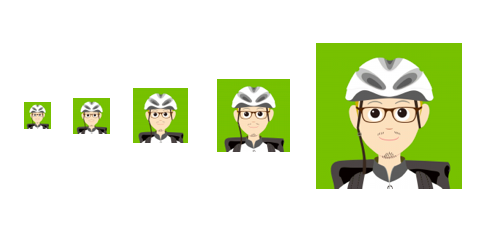

navbarのcolor設定の微調整を行いました。
サイトのキーカラーを緑色に設定し、navbarのbackground-colorや見出し周りなどにアクセントを入れてみました。
キーカラーは「R:51,G:204,B:0」で設定していきます。
#mainNav {
font-family: "游ゴシック体", YuGothic, "游ゴシック", "Yu Gothic", "メイリオ", sans-serif;
background-color: rgba(51,204,0,0.8);
border-bottom: 1px solid rgba(51,204,0,0.8);
}
PCのスクリーンサイズでは、問題なく表示されているのですが、タブレット、スマホのスクリーン表示の際、navbar内のtextが「black」、bottom-lineが「white」に表示されるため、
Chromeのデベロッパーツールで確認して、該当箇所のCSSを設定している緑色に変更をかけました。
Navbarのカラー設定についてはひとまず確定ということで進めていきます。
faviconの設定
ふだん何気なく設定指定たfavicon（ファビコン）ですが、その必要性についてあらためて調べてみました。 faviconはWebブラウザページを開いた際に、アドレスバーやタブの一番左に表示されるアイコンのことです。 ブラウザで複数のタブを開いた状態や、ブックマークの一覧から判別しやすいというメリットがあります。 また、スマホで「ホーム画面に保存」した場合、faviconを設置しているとホーム画面に「ウェブクリックアイコン」 として表示されるメリットもあります。
設定方法はhtmlのhead部分に下記ソースを記述します。
<-- favicon -->
<link rel="shortcut icon" href="img/favicon.ico">
<link rel="apple-touch-icon" sizes="152x152" href="img/apple-touch-icon-152x152.png">
<link rel="icon" type="image/png" sizes="152x152" href="img/android-chrome-152x152.png">
Faviconは使用する端末ごとに最適なファイルを用意する必要がありますが、 今回はPC版Web、iOS、Android用の3種類を用意し設定します。
Favicon用のicoファイルは下記サイトを使用して自動作成を行いました。
https://ao-system.net/alphaicon/
カードコンポーネントの設定
トップページのキービジュアル下の要素を、デフォルトのテキストのみ一覧から、 BootstrapのCardコンポーネントに変更をかけてみました。 Bootstapのコンポーネントはhtml内の該当箇所にあらかじめセットアップされた 要素名、属性名、クラス名を記述するだけでパーツが完成する大変便利なフレームワークです。
今回はPC版で3カラム、タブレット版で2カラム、スマホ版で1カラム表示に切り替わるコンポーネントを配置しました。 具体的には記事の最新投稿のサムネイルとして活用していきます。
<div class="col-lg-4 col-sm-6 portfolio-item">
<div class="card h-100">
<a href="#"> ブログ案のカスタマイズに取り掛かりました。</a>
</h5>
<span class="meta"><i class="fa fa-clock" aria-hidden="true"></i>2018.01.08</span>
<p class="card-text">Lポートフォリオでは、自己紹介ページはもちろん、ワークスキルの進捗や技術メモとして、ブログ形式の記事を毎日1回更新していきます。</p>
</div>
</div>
</div>
ブログ案のカスタマイズに取り掛かりました。</a>
</h5>
<span class="meta"><i class="fa fa-clock" aria-hidden="true"></i>2018.01.08</span>
<p class="card-text">Lポートフォリオでは、自己紹介ページはもちろん、ワークスキルの進捗や技術メモとして、ブログ形式の記事を毎日1回更新していきます。</p>
</div>
</div>
</div>
4ページ構成から1ページビューへの変更を検討中。
本ブログの構成は当初、「TOP」「自己紹介」「備忘録」「お問い合わせ」の4ページ構成を立てていました。 各ページの構成要素が固まってくるにつれて、ページネーション（サイトマップ）について再考の必要があることに気づき始めてきました。 一旦制作にかかってから仕様を変更してしまうのは本来NGなのですが、
- ページ構成が少ないこと
- 4ページ構成でなければならない理由がないこと
以上のことから、4ページ立てで当初考えていた構成を1ページビューに変更することも念頭に置いて、 今後のカスタマイズを行なっていきます。具体的には、ページ右上にあるnavbarにスクロールスパイを設定します。 各テキストをクリックすると、スムーズスクロールでページ上の該当箇所が表示される仕様を追加していきたいと考えています。
スクロールスパイの参考サイト→ http://www.lixus.co.jp/#!/corporate-profile/